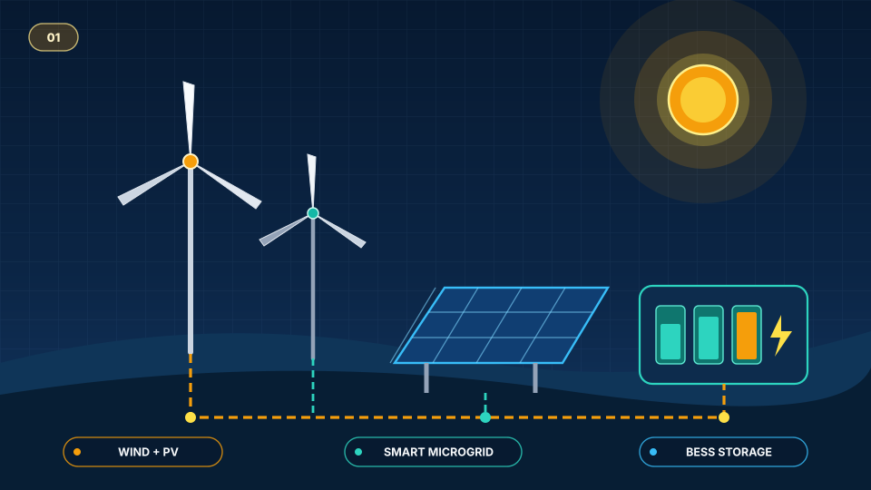
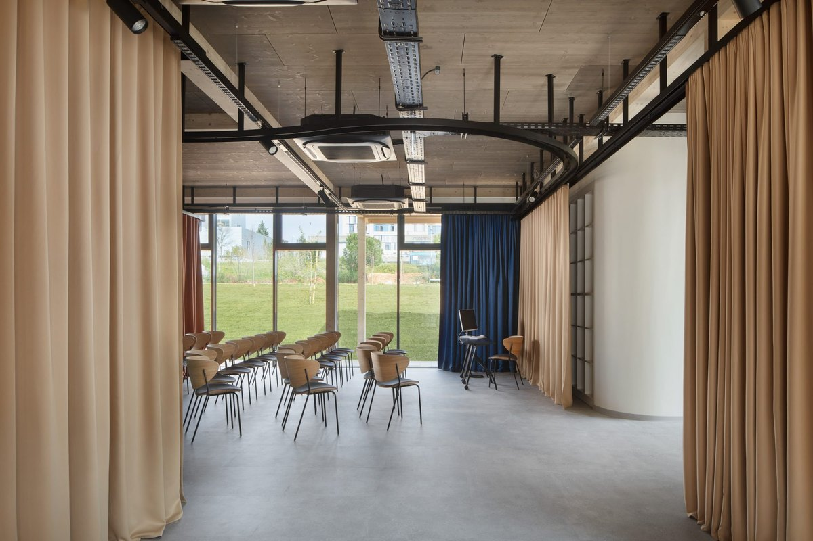

01
ABSTRACTS
June 18, 2027
50 Years Since the 1977 First Symposium • October 22, 2027 • InnovaLab, Rijeka, Croatia
The 26th International Congress Energy and the Environment 2027 brings together researchers, energy engineers, industry innovators, utility leaders, and policymakers from across Europe and beyond to exchange peer-reviewed advances in solar technologies, renewable energy systems, energy efficiency, and environmental protection.
Hosted at InnovaLab on the University of Rijeka Campus overlooking Kvarner Bay, the congress fosters dialogue between academic research and real-world engineering deployment—accelerating regional decarbonization, resilient grids, and sustainable urban and industrial energy transitions.

Tracing its origins to the First Symposium on Solar Energy Utilization in Opatija (1977) and the Croatian Solar Energy Society in Rijeka (1978, expanded into HSSE in 1988), the congress is organized in close cooperation with the Faculty of Engineering, University of Rijeka (RITEH).
Faculty of Engineering, University of Rijeka (RITEH) — Vukovarska 58, HR-51000 Rijeka, Croatia. Formed by merging the Department of Heat and Cooling with the Department of Heat Engines (named ZTE since 2005), the department is a longstanding academic co-organizer of the International Congress Energy and the Environment.
Research at the Department spans mechanical, process-energy, marine, thermal, and environmental engineering — including fin-and-tube and microchannel heat exchangers, regenerative exchangers and latent thermal energy storage, HVAC and renewable energy systems, compression and absorption refrigeration and heat pumps, steam and gas turbines, low-emission internal combustion engines, and energy-efficient marine power plants.
Alongside projects funded by the Croatian Science Foundation and the Ministry of Science and Education, department members conduct engineering studies, expert evaluations, and design supervision, and play a leading role in organizing the biennial International Congress Energy and the Environment.
Department of Thermodynamics and Energy Engineering • Faculty of Engineering (RITEH), Vukovarska 58, HR-51000 Rijeka, Croatia
We gratefully acknowledge the institutional partners, artists, and open-licensed works that support Energy and the Environment 2027 and this congress website.
Background soundtrack: “Cirrus” by Scott Buckley – released under CC-BY 4.0 (Creative Commons Attribution 4.0 International).
InnovaLab venue photography courtesy of the University of Rijeka (UNIRI). Congress organized by the Croatian Solar Energy Association (HSSE) in cooperation with the Faculty of Engineering, University of Rijeka (RITEH).
Inspired by the traditional HSSE Energy and the Environment emblem combining Leonardo da Vinci's Vitruvian Man (c. 1490) with a 24-ray solar crown. Vector tracing adapted via Wikimedia Commons (CC BY-SA 4.0).
Archival photographs and historical documentation in the History section are sourced from the undergraduate thesis of Teodora Milošević, "Doprinos riječkih znanstvenika na području toplinske konverzije sunčeve energije i obnovljivih izvora energije" (Faculty of Engineering, University of Rijeka — RITEH, 2016), supervised by Prof. dr. sc. Bernard Franković.

All key submission, registration, program, and publication deadlines leading up to the conference in Rijeka on Friday, October 22, 2027.
All fees are expressed in Euros (EUR). Each author may submit at most 2 articles; PhD students must provide a certificate of enrollment in a PhD programme.
| Registration Category | Deadline | Fee (EUR) |
|---|---|---|
|
Early Bird Registration
Discounted full participation fee (in-person in Rijeka & proceedings)
|
Until July 23, 2027 | 185,00 € |
|
Full Registration
Standard full participation fee (academia, industry & public institutions)
|
Until October 12, 2027 | 245,00 € |
|
Publication Only / Poster
Peer-reviewed paper publication in digital proceedings (ISBN) or poster presentation
|
Until September 24, 2027 | 135,00 € |
|
PhD Students
Certificate of enrollment in a PhD programme required
|
Until October 12, 2027 | 35,00 € |
Committee rosters for the 2027 edition are currently being finalized. Replace the placeholder entries below with confirmed names and institutional affiliations.
Croatian Solar Energy Association (HSSE) / RITEH, University of Rijeka
Faculty of Engineering (RITEH), University of Rijeka, Croatia
Department of Thermodynamics & Energy Engineering, RITEH
Institution / Department, City, Croatia
Institution / Department, City, Croatia
Local Organizing Secretariat / HSSE Rijeka
Hosted at InnovaLab on the University of Rijeka Campus (Trsat), overlooking the Kvarner Bay and easily accessible by air, motorway, and rail from Central Europe and the Adriatic region.



Radmile Matejčić 10 (StepRi Annex), 51000 Rijeka, Croatia
A contemporary 154 m² timber-and-glass multipurpose innovation pavilion (up to 80 seats) adjacent to the StepRi Science and Technology Park. Flexible acoustic curtains adapt the space for plenary lectures, parallel sessions, workshops, and exhibitions.
Photos: University of Rijeka (UNIRI) — InnovaLab
Closest airport • ~25–30 min drive
Istria motorway • ~1h 20m drive
Italy border • ~1h 30m drive
Slovenia hub • ~1h 40m drive
Croatia's primary international hub • Direct A6 motorway (~1h 45m drive or regular bus)
Explore archived editions of the International Congress Energy and the Environment in Opatija, preserved from the former Croatian Solar Energy Association website (www.hsse.hr) via the Internet Archive.
Oct 26–28, 2016 • Opatija, Croatia
Oct 21–24, 2014 • Opatija, Croatia
October 2012 • Opatija, Croatia
Sept 18–20, 2012 • Rijeka & Opatija, Croatia
Separate international solar conference proceedings
October 2010 • Opatija, Croatia
October 2008 • Opatija, Croatia
Oct 25–27, 2006 • Opatija, Croatia
October 2004 • Opatija, Croatia
Access additional historical snapshots, archived news, and earlier editions of the Opatija solar and energy congresses captured from www.hsse.hr on the Wayback Machine.
From the earliest solar prototypes at RITEH (1975) and the inaugural 1977 Symposium on Solar Energy Utilization in Opatija to landmark Adriatic solar thermal installations and international Energy and the Environment congresses — explore our history in chronological order.
First solar cooker prototype (Ø 1.35 m) & collector test station built at RITEH.
1st Symposium on Solar Energy Utilization in Opatija — beginning the 50-year tradition.
2nd Symposium at Hotel Kvarner, Solar Society founded in Rijeka (1978) & journal Sunčeva energija (1979).
Major solar thermal systems (Hotel Orlando Srebreno, ACI Marina Ičići) & HSSE founded (1988).
Biennial International Congress Energy and the Environment culminating in the 25th Jubilee (2016).
50th Anniversary & 26th International Congress at InnovaLab, University of Rijeka Campus.